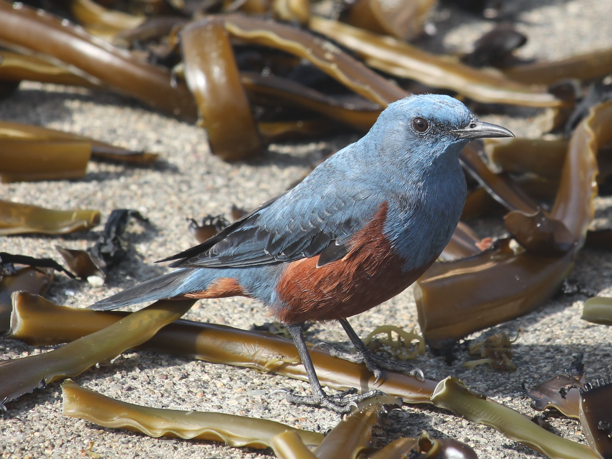

<a href="<a href="https://commons.wikimedia.org/wiki/File:Monticola_solitarius_philippensis_%28male_in_Suga_Island%29.JPG">Untitled</a> © 2015 by <a href="https://commons.wikimedia.org/wiki/User:Alpsdake">Alpsdake</a> is licensed under <a href="https://creativecommons.org/licenses/by-sa/4.0/">CC BY-SA 4.0</a>
